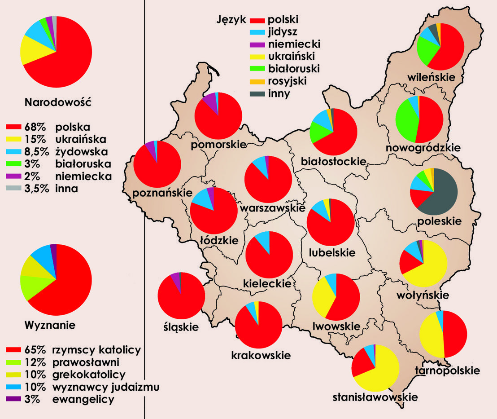

Społeczeństwo II Rzeczypospolitej
Społeczeństwo II Rzeczypospolitej
Odrodzona Rzeczypospolita według danych z 1921 r. liczyła 27 mln obywateli. Plasowało to Polskę na szóstym
miejscu
wśród państw
europejskich. Przez cały czas okres dwudziestolecia między wojennego liczba mieszkańców sukcesywnie rosła.
Na
początku Lat 30
przekroczyła 30 mln, a w 1939 r. Osiągneła 35 mln.Polska była państwem bardzo słabo zurbanizowanym.
Mniejszości narodowe w Rzeczypospolitej
